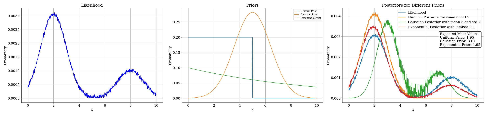

Chapter 6: Bayesian Statistics
Bayesian statistics is a theory in the field of statistics based on the Bayesian interpretation of probability
where probability expresses a degree of belief in an event. The degree of belief may change as new evidence is
presented. Bayesian statistics is a mathematical procedure that applies probabilities to statistical problems.
It provides a set of tools for representing uncertainty about quantities of interest, deriving inferences from
data, and quantifying the strength of evidence. In simplest terms, Bayesian statistics is a way to use
"whatever" information is available to make inferences about unknown quantities of interest.
Consider two events A and B. The probability of event A given that event B has occurred is denoted as P(A|B).
This
is called the conditional probability of A given B. The conditional probability of A given B is defined as:
\[ P(A|B) = \frac{P(A \cap B)}{P(B)} \]
where P(A ∩ B) is the probability of both A and B occurring, and P(B) is the probability of event B occurring.
In context of Bayesian statistics, P(A|B) is the posterior probability of event A given event B, P(A) is the
prior probability of event A, and P(B|A) is the likelihood of event B given event A. The posterior probability
is the probability of event A given event B has occurred. The prior probability is the probability of event A
before event B has occurred. The likelihood is the probability of event B given event A has occurred. Here, one
can treat A as some model parameters and B as the observed data. We are interested in finding the posterior
probability of the model parameters given the observed data.
Example
Consider two bowls with green and red balls. Bowl 1 has 3 red balls and 1 green ball, and Bowl 2 has 2 red balls
and 2 green balls. A bowl is selected at random, and a ball is drawn from it. If the ball is red, what is the
probability that it came from Bowl 1?
Solution
Let A be the event that the ball is red, and B be the event that the ball came from Bowl 1. We are interested in
finding P(B|A), the probability that the ball came from Bowl 1 given that it is red. We can use Bayes' theorem to
find this probability. Bayes' theorem states:
\[ P(B|A) = \frac{P(A|B) \cdot P(B)}{P(A)} \]
where P(A|B) is the probability that the ball is red given that it came from Bowl 1, P(B) is the probability that
the ball came from Bowl 1, and P(A) is the probability that the ball is red. We can calculate these probabilities
as follows:
- P(A|B) = 3/4 (since Bowl 1 has 3 red balls out of 4)
- P(B) = 1/2 (since the bowl is selected at random)
- P(A) = P(A|B) * P(B) + P(A|B') * P(B') = 3/4 * 1/2 + 1/2 * 1/2 = 5/8
Substituting these values into Bayes' theorem, we get:
\[ P(B|A) = \frac{3/4 \cdot 1/2}{5/8} = \frac{3}{5} \]
Note that the probability of the ball coming from Bowl 1 given that it is red is 3/5 or 60%. If we had no prior
information, the probability would be 50% (since there are two bowls). However, the prior information about the
number of red balls in each bowl affects the posterior probability. Every time a red ball is drawn, the probability
of the ball coming from Bowl 1 increases. This is the essence of Bayesian statistics - updating beliefs based on
new evidence.
The Monty Hall Problem
A demonstration of Bayesian statistics in action is the Monty Hall problem. The Monty Hall problem is a
probability puzzle based on a game show scenario. The problem is named after Monty Hall, the host of the
television game show "Let's Make a Deal." The problem is as follows:
You are a contestant on a game show. The host presents you with three doors. Behind one of the doors is a car,
and behind the other two doors are goats. You choose a door, say Door 1. The host then opens one of the other
two doors, revealing a goat. The host gives you the option to switch your choice to the remaining unopened door
(Door 2 or Door 3). Should you switch your choice to maximize your chances of winning the car?
The Monty Hall problem can be solved using Bayesian statistics by updating the probabilities based on the
information provided by the host. The initial probability of choosing the car is 1/3, and the probability of
choosing a goat is 2/3. When the host reveals a goat behind one of the doors, the probability of the car being
behind the remaining unopened door increases to 2/3. Therefore, switching your choice maximizes your chances of
winning the car.
The Choice of Prior
One of the key aspects of Bayesian statistics is the choice of prior probability. The prior probability represents
the initial belief about the model parameters before observing the data. The choice of prior can significantly
influence the posterior probability and the final inferences drawn from the data. Given the nature of the problem,
one can choose different types of priors such as a Uniform prior, Normal prior, Beta prior, etc. The choice of prior
should be based on domain knowledge, historical data, or expert opinion.
A demonstration of different Bayesian priors can be found here.
The figure below shows the effect of different priors on the posterior distribution. The data is represented by
likelihood curve, which is a noisy two peaked distribution. Depending on our scientific understanding, we can
choose different priors such as a uniform prior between some range, a normal prior centered around some value,
or an exponential prior. The choice of prior can significantly influence the posterior distribution and the
expected value of the model parameters.
